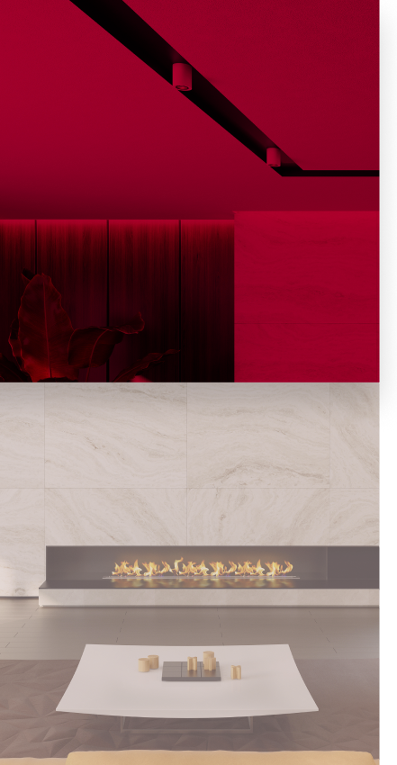
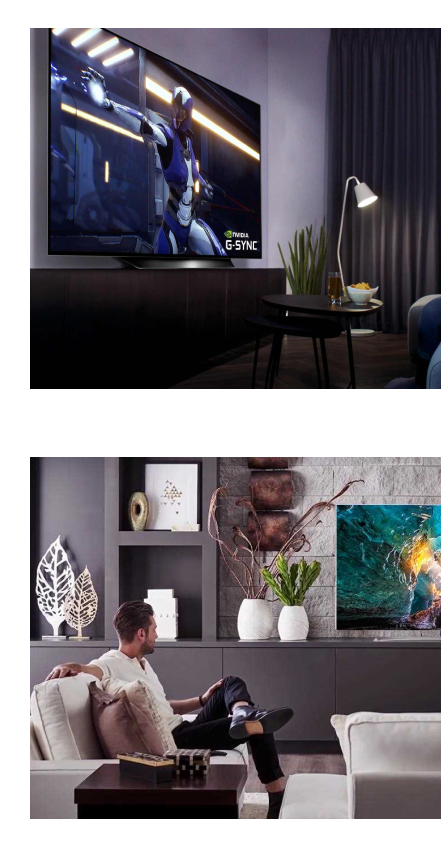
Key Things To Consider When Shopping For Your New TV
When it comes down to it, choosing the right TV depends on figuring out what’s important to you. The best TV for you is not necessarily the best TV for everyone else. So, here are the basic things you should think about when starting off your TV buying journey.
Are you planning on keeping this TV for a long time?
If you’re the type of shopper who buys new electronics every year, then choose whatever TV fits your fancy. If you’re planning on keeping this TV for several years, then it’s important to get the latest technology, so that it keeps up with new innovations like 4K content.What are you planning to use the TV for?
The features that are most important to a gamer aren’t necessarily the features most families look for in a TV to watch movies and shows with their kids on weeknights. Make sure to consider specific specs that fit what you need out of your TV.Where are you planning to watch your TV?
Will it go in the living room, home theater, bedroom, or somewhere else? Choosing the right size and specs depends largely on where the TV will be placed. Bigger rooms usually lead to choosing a bigger TV.Will you be streaming content?
If you’re planning on using Netflix, Hulu, Prime Video, Youtube TV, or any other streaming services, a smart TV is probably the way to go.Key Things To Consider When
Shopping For Your New TV
When it comes down to it, choosing the right TV depends on figuring out what’s important to you. The best TV for you is not necessarily the best TV for everyone else. So, here are the basic things you should think about when starting off your TV buying journey.
Are you planning on keeping this TV for a long time?
If you’re the type of shopper who buys new electronics every year, then choose whatever TV fits your fancy. If you’re planning on keeping this TV for several years, then it’s important to get the latest technology, so that it keeps up with new innovations like 4K content.What are you planning to use the TV for?
The features that are most important to a gamer aren’t necessarily the features most families look for in a TV to watch movies and shows with their kids on weeknights. Make sure to consider specific specs that fit what you need out of your TV.Where are you planning to watch your TV?
Will it go in the living room, home theater, bedroom, or somewhere else? Choosing the right size and specs depends largely on where the TV will be placed. Bigger rooms usually lead to choosing a bigger TV.Will you be streaming content?
If you’re planning on using Netflix, Hulu, Prime Video, Youtube TV, or any other streaming services, a smart TV is probably the way to go.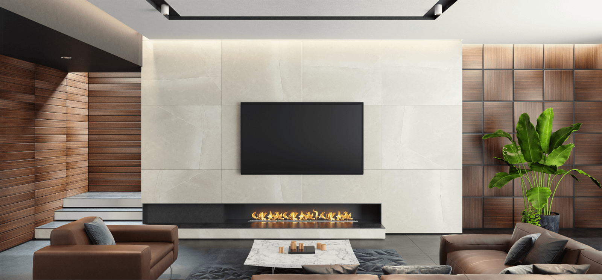
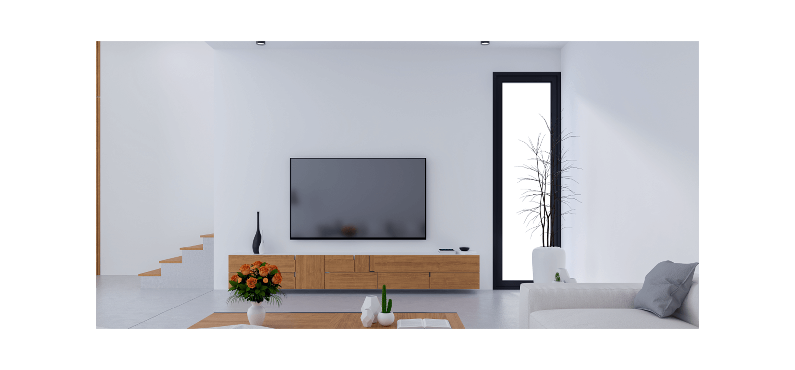
How to Choose the Right TV Size
What TV Size Really Means
Generally, a TV size is actually the length of the TV’s diagonal. So a 65-inch TV is actually smaller than a TV that measures 65 inches in wide. Make sure to measure the diagonal in the space where you will be putting your TV to figure out just how big or small your new TV can actually be. 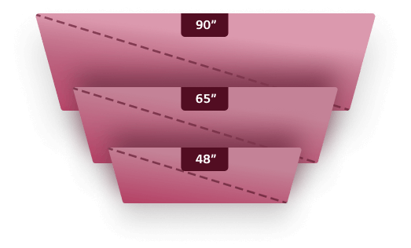Choosing the Perfect TV Size
How big is the room where your new TV will live? How much wall space do you have? Choose the biggest size that will fit the wall size and room you're working with. If its for a smaller space, choose a smaller TV that won't be overwhelming. But, for a home theater, go as big as you can. Generally your maximum TV size should be your viewing distance multiplied by 10. So, if you sit 9 feet away from your TV, the ideal size is 90 inches. 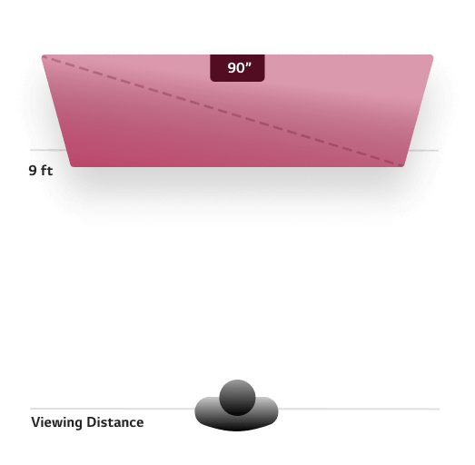TV Viewing Angle
Another thing to consider is how close you’ll be sitting to your TV, and the angle at which you’ll be watching. If you'll often be watching TV from a wider viewing angle, make sure to look for a TV that specifically accommodates wide viewing angles, like an OLED. 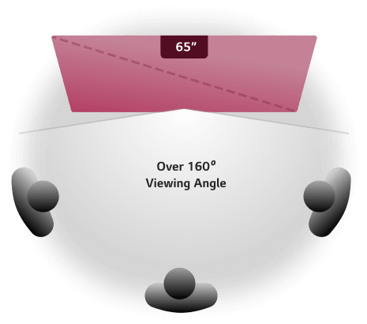How to Choose the
Right TV Size
What TV Size Really Means
Generally, a TV size is actually the length of the TV’s diagonal. So a 65-inch TV is actually smaller than a TV that measures 65 inches in wide. Make sure to measure the diagonal in the space where you will be putting your TV to figure out just how big or small your new TV can actually be.Choosing the Perfect TV Size
How big is the room where your new TV will live? How much wall space do you have? Choose the biggest size that will fit the wall size and room you're working with. If its for a smaller space, choose a smaller TV that won't be overwhelming. But, for a home theater, go as big as you can. Generally your maximum TV size should be your viewing distance multiplied by 10. So, if you sit 9 feet away from your TV, the ideal size is 90 inches.TV Viewing Angle
Another thing to consider is how close you’ll be sitting to your TV, and the angle at which you’ll be watching. If you'll often be watching TV from a wider viewing angle, make sure to look for a TV that specifically accommodates wide viewing angles, like an OLED.Choosing the right model for your home
LG QNED MiniLED
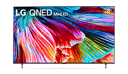
Features new display technology for a bright, sharp and clear picture. Especially ideal for big-screen viewing.
LG NanoCell Ultra HD
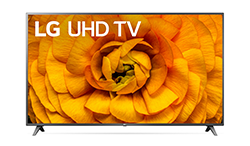
Also known as "4K," LG's Ultra High Definition (UHD) TVs offer impeccable sharpness and vivid detail at accessible price points.
Nanocell
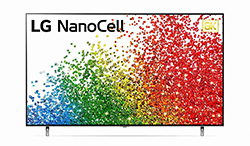
Looking for better color than a regular LED TV? Nanocell gives you vibrant colors and a clear picture without breaking the bank.
Picture and Sound Qualities To Look For
Screen Resolution
When it comes to resolution, generally, 8K provides better picture quality than 4K, and 4K is better than regular, full HD. Why?
Each pixel in a TV provides a tiny square of color, and all those squares combine to create one picture. So, a higher number of pixels in a TV allows for more individual little blocks of color, creating clearer details. An increasing amount of new content is being created in higher resolutions. So, as new seasons of shows and new movies are released, a TV with better resolution will allow you to watch them in better quality.
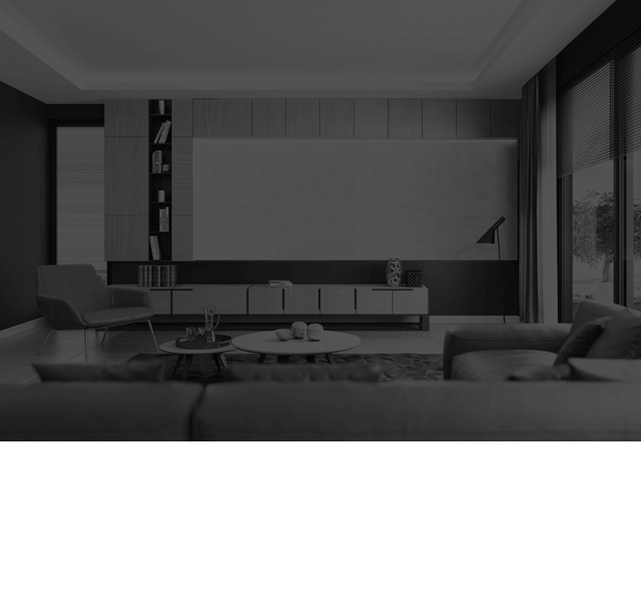
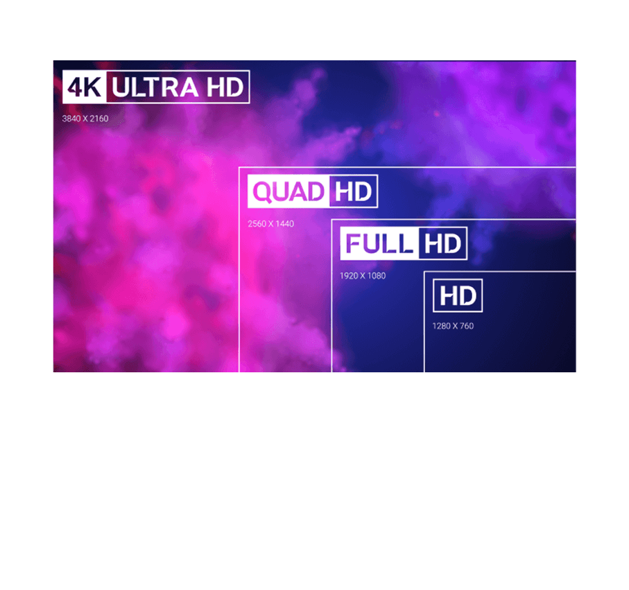
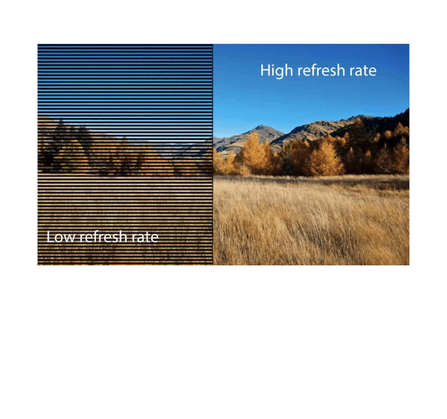
Screen Refresh Rates
Have you ever been watching something with fast action on TV and noticed a bit of a blur on-screen?
That can be common for TVs with low refresh rates. Generally, the higher a refresh rate, the less motion blur you will notice during quick action like sports or games. Many LG TVs feature a 120 Hz refresh rate, which means there are 120 frames per second, double the number of frames per second of a 60 Hz refresh rate.
Picture and Sound Qualities To Look For
Screen Resolution
When it comes to resolution, generally, 8K provides better picture quality than 4K, and 4K is better than regular, full HD. Why?
Each pixel in a TV provides a tiny square of color, and all those squares combine to create one picture. So, a higher number of pixels in a TV allows for more individual little blocks of color, creating clearer details. An increasing amount of new content is being created in higher resolutions. So, as new seasons of shows and new movies are released, a TV with better resolution will allow you to watch them in better quality.
Screen Refresh Rates
Have you ever been watching something with fast action on TV and noticed a bit of a blur on-screen?
That can be common for TVs with low refresh rates. Generally, the higher a refresh rate, the less motion blur you will notice during quick action like sports or games. Many LG TVs feature a 120 Hz refresh rate, which means there are 120 frames per second, double the number of frames per second of a 60 Hz refresh rate.
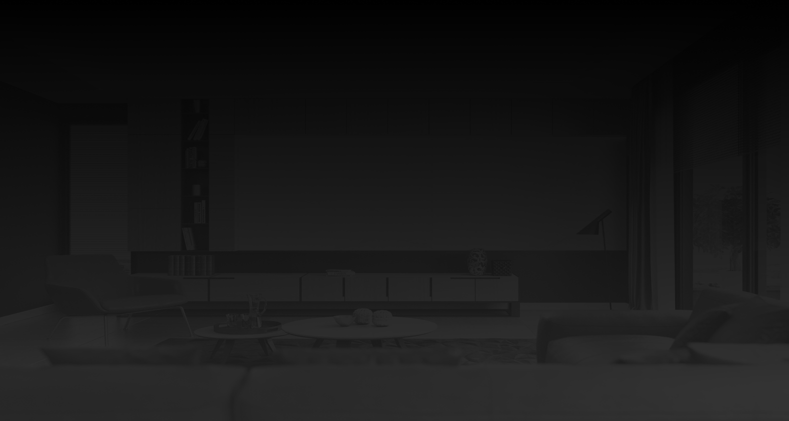
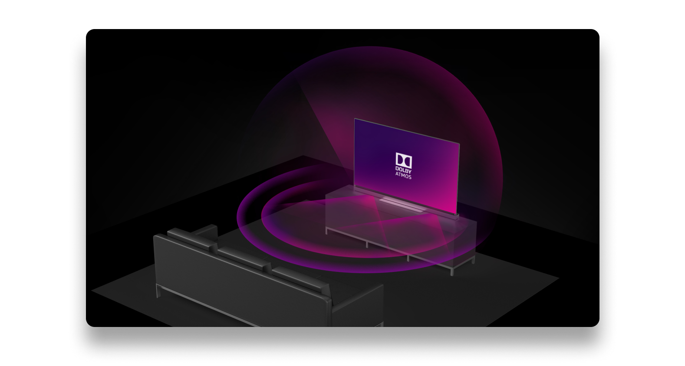
Sound Quality
For the best sound quality, you will generally want to purchase a sound bar or sound system alongside your TV. That means you should look for a TV that features seamless audio features like Dolby Atmos, which help create a cinematic experience.Sound Quality
For the best sound quality, you will generally want to purchase a sound bar or sound system alongside your TV. That means you should look for a TV that features seamless audio features like Dolby Atmos, which help create a cinematic experience.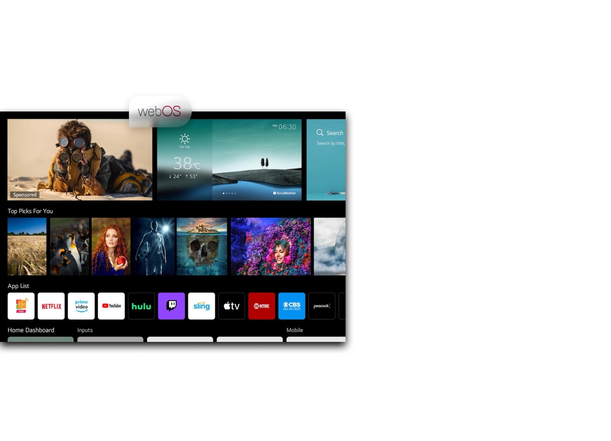
Web OS
When it comes to smartTVs, make sure to find a TV operating system to fit your needs. Our WebOS software was specifically designed to let you do pretty much anything.Home Screen
The home screen provides fast access to the most frequently used apps and streamlines content discovery with the ability to receive recommendations based on your preferences and viewing history and a lot more.LG Channels
With access to more than 200 apps as well as high quality streaming channels from PlutoTV, LG Channels collects all your content in one place. It can recommend content based on your viewing preferences and show you all the possibilities for what you could watch either live or on demand at any given time.Smart Search
Other handy features include an improved ‘content search’ system that combines its results with intelligent recommendations; an improved Home Dashboard for monitoring and even controlling other smart devices on your network; and the inclusion on some models of a far-field mic, so you can speak to the TV without needing the remote control.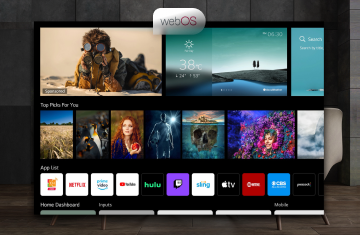
Web OS
When it comes to smartTVs, make sure to find a TV operating system to fit your needs. Our WebOS software was specifically designed to let you do pretty much anything.Home Screen
The home screen provides fast access to the most frequently used apps and streamlines content discovery with the ability to receive recommendations based on your preferences and viewing history and a lot more.LG Channels
With access to more than 200 apps as well as high quality streaming channels from PlutoTV, LG Channels collects all your content in one place. It can recommend content based on your viewing preferences and show you all the possibilities for what you could watch either live or on demand at any given time.Smart Search
Other handy features include an improved ‘content search’ system that combines its results with intelligent recommendations; an improved Home Dashboard for monitoring and even controlling other smart devices on your network; and the inclusion on some models of a far-field mic, so you can speak to the TV without needing the remote control.LG Magic Remote
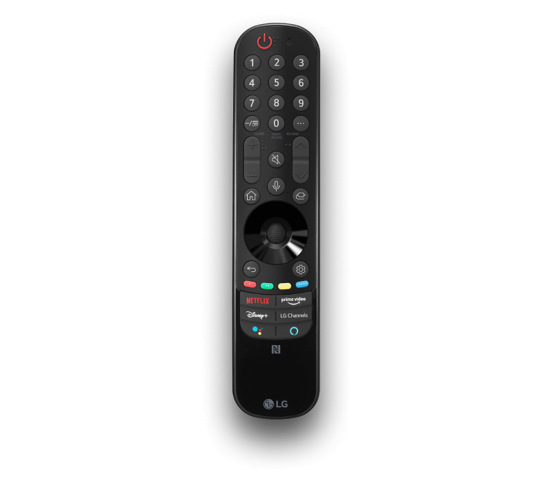
Many TVs feature easy-to-lose remotes that are practically useless besides turning the TV on and off. Some of our TVs come with our Magic Remote. We've integrated smart features into the Magic Remote to make it more useful. We've integrated some smart features into the Magic Remote to make it more useful.

LG Magic Remote
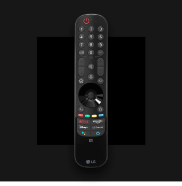
Many TVs feature easy-to-lose remotes that are practically useless besides turning the TV on and off. Some of our TVs come with our Magic Remote. We've integrated smart features into the Magic Remote to make it more useful. We've integrated some smart features into the Magic Remote to make it more useful.
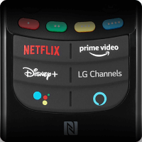
Shortcuts
Shortcut buttons for select streaming apps including Netflix, Amazon Prime Video, and Disney+.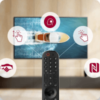
Navigation
Point, click, and scroll making navigating the interace easier and faster.Voice
Voice control to open apps, inputs and settings with this remote. You can also use Google Assistant and Alexa using this remote.What other shoppers are buying
Choosing the right model for your home
LG OLED C1
Phenomenal picture quality!
"Tum dicere exorsus est laudem et accusamus et aut odit..."
LG QNED MiniLED
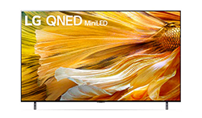
Phenomenal picture quality!
"Tum dicere exorsus est laudem et accusamus et aut odit..."
LG NanoCEll 8K
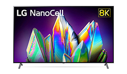
Phenomenal picture quality!
"Tum dicere exorsus est laudem et accusamus et aut odit..."
LG UHD TV
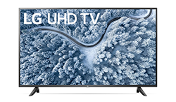
Phenomenal picture quality!
"Tum dicere exorsus est laudem et accusamus et aut odit..."
TV’s as low as $599
Let’s Get Your Next TV Experience
Browse our different TV options and acessories today!SHOP NOW